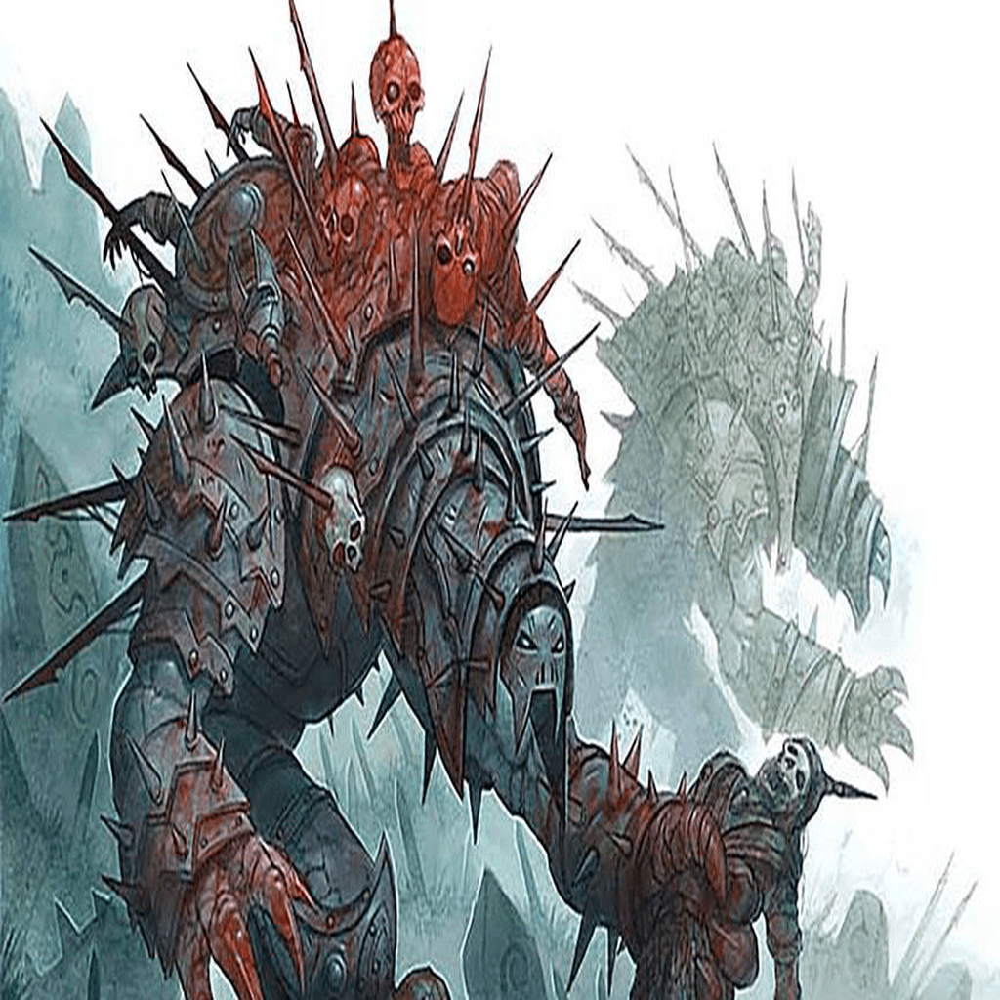

| Armor Class: | 17 (natural armor) |
| Hit Points: | 189 (18d10+90) |
| Speed: | 30 ft. |
| STR | DEX | CON | INT | WIS | CHA |
|---|---|---|---|---|---|
| 21 (+5) | 14 (+2) | 20 (+5) | 5 (-3) | 11 (+0) | 8 (-1) |
| Damage Immunities: | necrotic, poison, psychic; bludgeoning, piercing and slashing from non-magical that aren't adamantine. |
| Condition Immunities: | charmed, exhaustion, frightened, paralyzed, petrified, poisoned. |
| Senses: | darkvision 60 ft., passive Perception 10. |
| Languages: | understands all languages, but can't speak. |
| Challenge: | 14 (11,500 XP) |
Magic Resistance. The cadaver collector has advantage on saving throws against spells and other magical effects.
Summon Specters. (Recharges after a Short or Long Rest) As a bonus action, the cadaver collector calls up the enslaved spirits of those it has slain; 1d6 specters (without Sunlight Sensitivity) arise in unoccupied spaces within 15 feet of the cadaver collector on the same initiative count and fight until they're destroyed. They disappear when the cadaver collector is destroyed.
Multiattack. The cadaver collector makes two slam attacks.
Slam. Melee weapon attack: +10 to hit, reach 5 ft., one target. _Hit:_ 18 (3d8 + 5) bludgeoning damage plus 16 (3d10) necrotic damage.
Paralyzing Breath (Recharge 5-6). The cadaver collector releases paralyzing gas in a 30-foot cone. Each creature in the area must make a successful DC 18 Constitution saving throw or be paralyzed for 1 minute. A paralyzed creature repeats the saving throw at the end of each of its turns, ending the effect on itself with a success.
The ancient war machines known as cadaver collectors lumber aimlessly across the blasted plains of Acheron until they are called upon by a necromancer, hobgoblin general, or other evil warlord to bolster the ranks of a conquering army. These fearsome constructs obey their summoners until being dismissed back to Acheron, but if a summoner comes to a bad end, a cadaver collector might wander the Material Plane for centuries, collecting corpses while searching for a way to return home.
Sweeping the Dead. Cadaver collectors respond to a summons from a mortal only when they are called to the scene of a great battle - either where one is in progress, where one is imminent, or where one took place. They encase themselves in the armor and weapons of fallen warriors and impale the corpses of those warriors on the lances and other weapons embedded in their salvaged armor.
Conjured Berserkers. Corpses that accumulate on the construct's shell aren't just grisly battle trophies. A cadaver collector can summon the spirits of these cadavers to join battle with its enemies and to paralyze more creatures for eventual impalement. Although these specters are individually weak, a cadaver collector can call up an almost endless supply of them, given time.
Constructed Nature. A cadaver collector doesn't require air, food, drink, or sleep.
